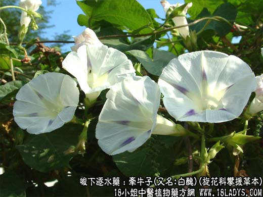

【中药概述】
牵牛子(又名:白丑)为旋花科攀援草本植物裂叶牵牛的成熟种子。苦、辛，寒；有毒。归肺、肾、大肠经。
1．泻下逐水：用于水饮停蓄，水肿胀满，二便不利及湿热壅滞，大便秘结等。可用本品为末，姜汁送服。如（普济方<牵牛散>）、（沈氏尊生<牵牛散>牵牛子，大黄，槟榔，雄黄）。
2．虫积腹痛：用于驱杀蛔虫和绦虫的作用，如<牛榔丸>。
【药效鉴别】
本品辛通，沉降下行，少用通便利尿，多用峻泻逐水，通利三焦。黑丑生利水。
【药理作用】
1.有明显的泻下作用，其泻下有效成分为牵牛子甙；
2.此药物成分经尿排泻，能增强肾的功能，有利尿作用。
【化学成分】
含牵牛子甙、脂肪油、蛋白质、多种糖类及色素。牵牛子甙在肠内遇胆汁及肠液分解出牵牛子素，能刺激粘膜充血、分泌增多、肠蠕动加速引起水泻。
【用量用法】
2——10g，打碎入煎剂，或入丸散剂。
【使用注意】
孕妇及体虚气弱者忌。本品畏巴豆（巴豆性烈最为上，偏与牵牛不顺情）。
【注】
其花色较浅、结子色白，称白丑。现代实验初步证明，黑、白丑泻下作用并无差别，故大都混合应用。